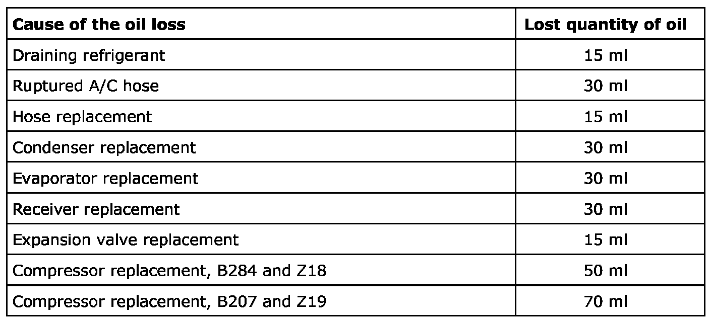

Refrigerant Oil: Service and Repair
Filling And Adjusting The Compressor Oil
The A/C system for B284 and Z18 is filled with 120 ml compressor oil while the A/C for Z19 and B207 is filled with 135 ml. A certain amount of compressor oil is always lost when emptying refrigerant and changing components. This amount must be topped up again to maintain the function of the system.
Filling of compressor oil should be done on the high pressure side or through the oil plug.
IMPORTANT: Use the specified compressor oil.
When refrigerant and compressor oil are drained, tracing agent is drained as well. When compressor oil is filled, an amount of tracing agent is added to make it easier to check for leaks. This is not the case if a new receiver is mounted as it already contains tracing agent.
For information about which compressor oil should be used, see Compressor (170), Z19 and B207.
The table below shows how much compressor oil is lost in connection with different types of work on the A/C system:

B207 and Z19
Note the new compressor is supplied filled with 135 ml of oil. In order not to get too much oil in the A/C system, and in doing so impair cooling, oil must be drained from the compressor before it is fitted. How much depends on how much oil has been lost in connection with the replacement of other components. The A/C system should always contain 135 ml of compressor oil.
If only the compressor is replaced then 70 ml of oil should be drained from the new compressor (135-50-15=70). In this way the lost 65 ml is replaced (135-70=65).
B284 and Z18
Note the new compressor is supplied filled with 120 ml of oil. In order not to get too much oil in the A/C system, and in doing so impair cooling, oil must be drained from the compressor before it is fitted. How much depends on how much oil has been lost in connection with the replacement of other components. The A/C system should always contain 120 ml of compressor oil.
If only the compressor is replaced then 55 ml of oil should be drained from the new compressor (120-50-15=55) In this way the lost 65 ml is replaced (120-55=65).
Tightening torque, compressor oil plug 30 Nm (22 lbf ft)